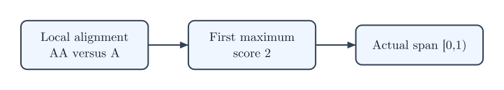
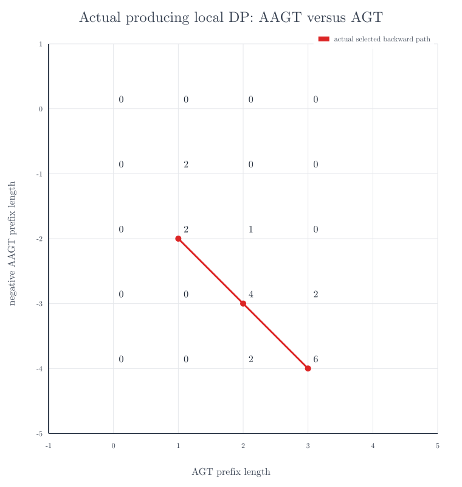
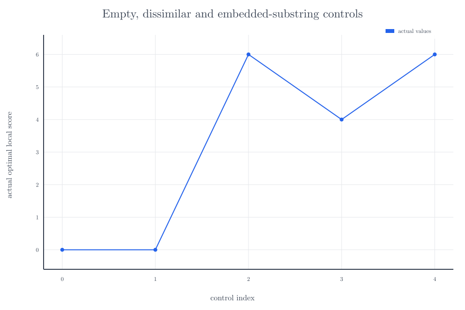
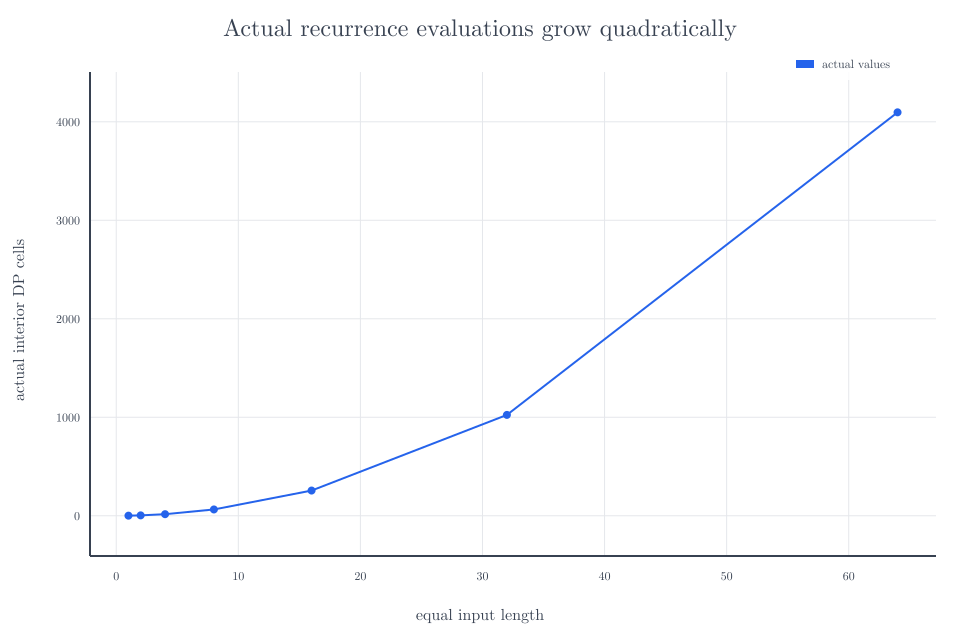

Smith-Waterman: actual local scores and traceback
Abstract
Two byte sequences may share a high-scoring motif while their flanks disagree. Local alignment chooses substrings and inserted gaps to maximize a linear-gap score without forcing the flanks to align. We inspect the actual dynamic-programming table and selected path, retain AAGT versus AGT and the embedded GATTACA motif, and compare global alignment explicitly.
Mechanism and mathematical scope
Let H(i,j) be the best local alignment score ending at the two prefixes. Either extend a diagonal pair, delete from the first input, insert from the second, or begin anew with zero:
Induction over increasing row and column proves the recurrence covers the last operation of every local alignment. A global maximum therefore chooses the optimal endpoint. Backtracking until a zero chooses its start, discarding unmatched flanks. The first row-major maximum is retained; traceback ties choose diagonal, then up, then left. Gap must be nonpositive, with default match2,mismatch-1,gap-2. There is no affine gap-open penalty.
Both time and allocated table storage are proportional to the input-length product. The retained table is the actual producing table, not the old report's reconstruction. Widened candidate sums detect an unrepresentable int score. Gapped strings contain dash markers; literal dash input bytes are allowed but the coordinates/path are needed to disambiguate them.
A tiny actual producing history
The table and native concept diagram read the same producing execution. Every block below is a complete editable C++ program.
#include <dm/dm.hpp>
int main() {
namespace a = dm::algorithms;
namespace g = dm::graphics;
std::filesystem::create_directories("build");
auto r = a::smith_waterman_trace("AA", "A");
std::print("| actual DP row | values including zero border |\n| ---: | --- |\n");
for (std::size_t i = 0; i < r.table.size(); ++i)
std::print("| {} | `{}` |\n", i, r.table[i]);
std::print("\nSelected rows `{}` and `{}`, score {}, first span [{},{}).\n",
r.alignment.a_aligned, r.alignment.b_aligned, r.alignment.score,
r.begin_a, r.end_a);
g::Diagram concept_diagram(48, 1100);
concept_diagram.node("n0", {0, 0}, "Local alignment AA versus A");
concept_diagram.node("n1", {5, 0},
std::format("First maximum score {}", r.alignment.score));
concept_diagram.node("n2", {10, 0},
std::format("Actual span [{},{})", r.begin_a, r.end_a));
concept_diagram.edge("n0", "n1").edge("n1", "n2");
concept_diagram.save_svg("build/smith_waterman_tiny.svg");
}| actual DP row | values including zero border |
|---|---|
| 0 | [0, 0] |
| 1 | [0, 2] |
| 2 | [0, 2] |
Selected rows A and A, score 2, first span [0,1).

The retained original experiment
#include <dm/dm.hpp>
int main() {
namespace a = dm::algorithms;
namespace g = dm::graphics;
std::filesystem::create_directories("build");
auto r = a::smith_waterman_trace("AAGT", "AGT");
auto global = a::needleman_wunsch("AAGT", "AGT");
auto motif = a::smith_waterman_run("TTTGATTACAGGG", "CCGATTACAAA");
std::print("| retained experiment | actual score | first row | second row |\n| --- | ---: | --- | --- " "|\n| local AAGT/AGT | {} | `{}` | `{}` |\n| global same inputs | {} | `{}` | `{}` |\n| " "embedded motif | {} | `{}` | `{}` |\n",
r.alignment.score, r.alignment.a_aligned, r.alignment.b_aligned,
global.score, global.a_aligned, global.b_aligned,
motif.alignment.score, motif.alignment.a_aligned,
motif.alignment.b_aligned);
auto plot = g::RPlot::create();
for (std::size_t i = 0; i < r.table.size(); ++i)
for (std::size_t j = 0; j < r.table[i].size(); ++j)
plot.text(j + .12, -double(i) + .15, std::to_string(r.table[i][j]),
{31, 41, 55}, 16);
std::vector<double> x, y;
std::print("\n| actual backward row | column | score | move |\n| ---: | ---: | ---: | --- |\n");
for (const auto &s : r.traceback) {
std::print("| {} | {} | {} | {} |\n", s.row, s.column, s.score, s.move);
x.push_back(s.column);
y.push_back(-double(s.row));
}
plot.lines(x, y, "actual selected backward path", {220, 38, 38}, 3).points(
x, y, {220, 38, 38}, 5).title("Actual producing local DP: AAGT versus AGT").x_label("AGT prefix length").y_label("negative AAGT prefix length").size(760, 800).margins(80, 40, 72, 88).x_limits(-1, 5).y_limits(-5, 1);
plot.save_svg("build/smith_waterman_original.svg");
}| retained experiment | actual score | first row | second row |
|---|---|---|---|
| local AAGT/AGT | 6 | AGT | AGT |
| global same inputs | 4 | AAGT | -AGT |
| embedded motif | 14 | GATTACA | GATTACA |
| actual backward row | column | score | move |
|---|---|---|---|
| 4 | 3 | 6 | D |
| 3 | 2 | 4 | D |
| 2 | 1 | 2 | D |

Explicit controls
#include <dm/dm.hpp>
int main() {
namespace a = dm::algorithms;
namespace g = dm::graphics;
std::filesystem::create_directories("build");
const std::vector<std::pair<std::string, std::string>> cases{
{"", "A"}, {"A", "T"}, {"AAA", "AAA"}, {"TTACGG", "CCACAA"},
{"AAGT", "AGT"}
};
std::vector<double> x, y;
std::print("| control | inputs | actual score | first span | second span |\n| ---: | --- | ---: | --- | " "--- |\n");
for (std::size_t i = 0; i < cases.size(); ++i) {
auto r = a::smith_waterman_run(cases[i].first, cases[i].second);
std::print("| {} | `{}` / `{}` | {} | [{},{}) | [{},{}) |\n", i,
cases[i].first.empty() ? "(empty)" : cases[i].first,
cases[i].second.empty() ? "(empty)" : cases[i].second,
r.alignment.score, r.begin_a, r.end_a, r.begin_b, r.end_b);
x.push_back(i);
y.push_back(r.alignment.score);
}
auto plot = g::RPlot::create();
plot.lines(x, y, "actual values", {37, 99, 235}).points(x, y, {37, 99, 235},
4).title(
"Empty, dissimilar and embedded-substring controls").x_label(
"control index").y_label("actual optimal local score");
plot.save_svg("build/smith_waterman_controls.svg");
}| control | inputs | actual score | first span | second span |
|---|---|---|---|---|
| 0 | (empty) / A | 0 | [0,0) | [0,0) |
| 1 | A / T | 0 | [0,0) | [0,0) |
| 2 | AAA / AAA | 6 | [0,3) | [0,3) |
| 3 | TTACGG / CCACAA | 4 | [2,4) | [2,4) |
| 4 | AAGT / AGT | 6 | [1,4) | [0,3) |

Actual selected work and sensitivity
#include <dm/dm.hpp>
int main() {
namespace a = dm::algorithms;
namespace g = dm::graphics;
std::filesystem::create_directories("build");
std::vector<double> x, y;
std::print("| complete repeated-A length | actual score | evaluated cells | traceback steps |\n| ---: | " "---: | ---: | ---: |\n");
for (std::size_t n : {1, 2, 4, 8, 16, 32, 64}) {
auto r =
a::smith_waterman_run(std::string(n, 'A'), std::string(n, 'A'));
std::print("| {} | {} | {} | {} |\n", n, r.alignment.score,
r.evaluated_cells, r.traceback_steps);
x.push_back(n);
y.push_back(r.evaluated_cells);
}
auto plot = g::RPlot::create();
plot.lines(x, y, "actual values", {37, 99, 235}).points(x, y, {37, 99, 235},
4).title(
"Actual recurrence evaluations grow quadratically").x_label(
"equal input length").y_label("actual interior DP cells");
plot.save_svg("build/smith_waterman_work.svg");
}| complete repeated-A length | actual score | evaluated cells | traceback steps |
|---|---|---|---|
| 1 | 2 | 1 | 1 |
| 2 | 4 | 4 | 2 |
| 4 | 8 | 16 | 4 |
| 8 | 16 | 64 | 8 |
| 16 | 32 | 256 | 16 |
| 32 | 64 | 1024 | 32 |
| 64 | 128 | 4096 | 64 |

API and interpretation
The strings are controlled byte fixtures rather than sampled homologous genes. A high local score alone is not a statistical homology test. No positive score gives empty rows and zero spans. Complete bordered DP defaults to one million cells, and optional actual traceback records have their own bound. Integer overflow is rejected instead of corrupting the recurrence.
Reusable producers, fixtures and histories live in the canonical C++ library. Captured records own their values and do not come from a separate report replay. Selected counters and record/scalar policies are specified at their API boundaries; they are not peak-byte or wall-time budgets. Synthetic structural inputs are controlled fixtures for these mechanisms.
References
Verified in the shared ten-document batch: 67 scoped native cases and9 formatter
cases;20 directly instrumented ASan/UBSan cases;87 executable public
examples;402/402 full-file definitions across29 scopes;10 hovers;10569
independent records/108541 checks;frozen comparisons across all ten families
with density-rank, long-prefix arithmetic, initial residual and complete-input
corrections recorded;15 checkout/installed standalone headers and linked
ten-family consumer;40 executed programs and40 inspected figures with both
exports. Receipts: build/mepml-conversion/batch-364-373/.